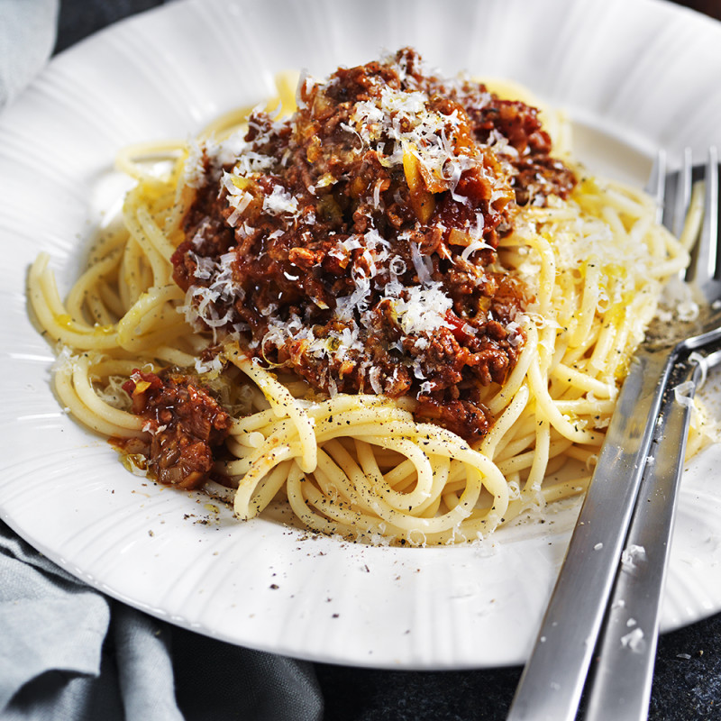

Pasta with meatsauce

This is a recipe of how to make a basic meatsauce with pasta.
Ingredients (for 2-3 people):
- Ground beef 500g
- 500g pasta
- 1 onion or onion powder to taste
- 2-3 cloves of garlic, or garlic powder to taste
- 1 can/pack of tomato sauce
- 2 large spoons of tomato paste
- a little bit of ketchup (for sweetness)
- veal stock
- salt
- pepper
- salt
- optional: parmesan
Cooking steps:
- If you're using fresh onions and garlic, prepare these by finely cutting or shredding
- Lightly brown the ground beef in a large pan or dutch oven, preferably one with an accompanying lid. When the meat is getting close to done, add tomato paste. If you are using fresh onion and garlic add this here as well.
- Add the tomato sauce to the beef, depending on the thickness of sauce add some extra water here. (tip: you can pour some water in the tomato can/pack to get the last out of it while adding water to the dish)
- Now it's time to add the flavorings, if you did not use fresh onion and garlic, pour in the powder versions here. Add the veal stock, ketchup and salt to the sauce.
- Stir the sauce thouroughly and put a lid on while lowering temp to a simmer. (example, 2 on a 9 scale stove)
- Bring a pot to boil for the pasta, pour in salt in the water before adding the pasta. Boil the pasta for the recommended time according to the package.
- Taste the sauce to check if more spices or salt is needed.
- When the pasta is done, you can here choose if you want to add the pasta into the sauce directly or portion pasta onto plates to add the sauce on top over it.
- Optional: grate some parmesan on top of the finished dish when it's plated.
- ENJOY!